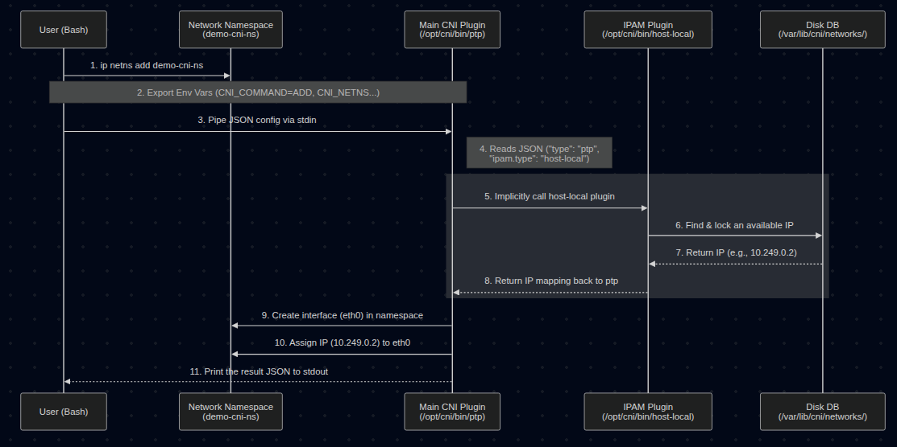
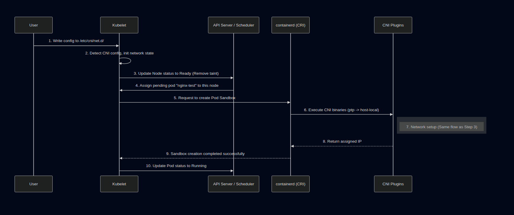

Series: Container Networking Deep Dive
- Demystifying Docker Networking: A Deep Dive into Bridge & veth
- Demystifying Docker Networking Egress: The Masquerade Magic
- Demystifying CNI: When Kubernetes "Borrows" Plugins to Build Its Network (You are here)
- How Cilium CNI works in K8S (In coming)
In the previous two posts, we performed a deep dive into Docker's Ingress Flow and Egress Flow by manually tinkering with veth, iptables, and nsenter.
But in Kubernetes (K8s), thousands of Pods are created and destroyed continuously. Kubelet can't afford the manual labor of typing those commands for every single Pod. It needs an "assistant" to do the heavy lifting. That assistant is the CNI (Container Network Interface).
Today, we will learn about CNI by running it manually (by hand), without using any sophisticated CNI suites like Calico or Cilium.
1. Prerequisites (Setup)
To follow this lab on Ubuntu 24.04, you will need:
- Docker: The foundational engine to run Kind.
- Kind v0.31.0 (Released Dec 18, 2025): A tool to create K8s Nodes as Docker containers.
- Kubectl: The CLI to control your cluster.
- jq: A divine JSON processor for parsing PIDs.
Detailed Installation:
# Install Kind v0.31.0
curl -Lo ./kind https://github.com/kubernetes-sigs/kind/releases/download/v0.31.0/kind-linux-amd64
chmod +x ./kind
sudo mv ./kind /usr/local/bin/kind
kind version
# Expected output: kind v0.31.0 go1.25.5 linux/amd64
# Install jq
sudo apt update && sudo apt install jq -y
2. Decoding the "Core" Concepts
What exactly is CNI?
It's not a background service. CNI is actually just a Specification that defines how the Container Runtime (like containerd) calls binaries located in /opt/cni/bin/. The runtime feeds it JSON, the Binary executes the task and returns the result.
IPAM (IP Address Management)
If the main CNI Plugin (like bridge or ptp) handles "plugging the wires," then IPAM handles the "ledgering" and decides which IP to use.
- It manages IP ranges (Subnets), tracking which IPs are assigned and which are free.
- The Delegation: The main CNI binary (like
ptp) doesn't choose the IP itself. It reads the"ipam"section in the JSON config, sees"type": "host-local", and implicitly executes thehost-localbinary (also located in/opt/cni/bin/). - The IPAM plugin returns an available IP back to the main plugin, and the main plugin then applies that IP to the container's network interface.
- In this lab,
host-localstores its IP database simply as text files on the Node's disk (in/var/lib/cni/networks/).
crictl - When Docker is no longer "The Boss"
Modern K8s uses the CRI (Container Runtime Interface - API between Kubelet and Container Runtime) — usually containerd. crictl is the tool to interact with the CRI. We use it here because Kind runs K8s nodes using containerd inside Docker.
3. Lab: Running CNI by Hand (Manual Execution)
Step 1: Spin up a "Naked" Cluster
Delete the old cluster (if any), since I have only 1 kind cluster for testing purpose.
root@kienlt-lab-utilities:~# kind get clusters
kind
root@kienlt-lab-utilities:~# kind delete cluster --name kind
Deleting cluster "kind" ...
Deleted nodes: ["kind-control-plane"]
Create a kind-config.yaml file to block the default network:
kind: Cluster
apiVersion: kind.x-k8s.io/v1alpha4
networking:
disableDefaultCNI: true
kind create cluster --config kind-config.yaml
Output:
root@kienlt-lab-utilities:~# kind create cluster --config kind-config.yaml
Creating cluster "kind" ...
✓ Ensuring node image (kindest/node:v1.35.0) 🖼
✓ Preparing nodes 📦
✓ Writing configuration 📜
✓ Starting control-plane 🕹️
✓ Installing StorageClass 💾
Set kubectl context to "kind-kind"
You can now use your cluster with:
kubectl cluster-info --context kind-kind
Have a nice day! 👋
root@kienlt-lab-utilities:~# kubectl get nodes
NAME STATUS ROLES AGE VERSION
kind-control-plane NotReady control-plane 12s v1.35.0
Check running containers:
root@kienlt-lab-utilities:~# docker ps
CONTAINER ID IMAGE COMMAND CREATED STATUS PORTS NAMES
e174ac300eb9 kindest/node:v1.35.0 "/usr/local/bin/entr…" 4 minutes ago Up 4 minutes 127.0.0.1:43013->6443/tcp kind-control-plane
Step 2: Create a Pod — Witness the Scheduler's "Helplessness"
Try to create a Pod WITHOUT any CNI config:
kubectl run nginx-test --image=nginx
Result: The Pod is stuck in Pending:
root@kienlt-lab-utilities:~# kubectl get pods
NAME READY STATUS RESTARTS AGE
nginx-test 0/1 Pending 0 12s
Run kubectl describe to see why:
root@kienlt-lab-utilities:~# kubectl describe pod nginx-test
...
Events:
Type Reason Age From Message
---- ------ ---- ---- -------
Warning FailedScheduling 10s default-scheduler 0/1 nodes are available:
1 node(s) had condition {Ready False}. preemption: ...
# Check node status
root@kienlt-lab-utilities:~# k get nodes
NAME STATUS ROLES AGE VERSION
kind-control-plane NotReady control-plane 13s v1.35.0
Why? No CNI config → The Container Runtime is responsible for loading CNI plugins. In this setup, containerd finds no valid config in its CNI conf directory and reports NetworkReady=false via the CRI Status API → Kubelet polls this status and marks the Node as NotReady → The Node is tainted with node.kubernetes.io/not-ready:NoSchedule → The Scheduler cannot place the Pod on any Node → The Pod stays in Pending indefinitely.
Step 3: Call the CNI Binary Manually — Exposing the Truth
Now, we will prove that CNI is just: a binary + environment variables + JSON via stdin. No magic involved. But let's me show you complete flows first (made with Mermaid)

Enter the Kind node:
docker exec -it kind-control-plane bash
Check available CNI binaries:
root@kind-control-plane:/# ls -l /opt/cni/bin
total 18804
-rwxr-xr-x 1 root root 4354987 Dec 15 23:24 host-local
-rwxr-xr-x 1 root root 4306167 Dec 15 23:24 loopback
-rwxr-xr-x 1 root root 5108415 Dec 15 23:24 portmap
-rwxr-xr-x 1 root root 5475215 Dec 15 23:24 ptp
Manually create a network namespace (simulating the namespace containerd would create for a Pod):
ip netns add demo-cni-ns
Set all required Environment Variables according to the CNI Spec:
export CNI_COMMAND=ADD
export CNI_CONTAINERID=demo-container-001
export CNI_NETNS=/var/run/netns/demo-cni-ns
export CNI_IFNAME=eth0
export CNI_PATH=/opt/cni/bin
Variable Breakdown:
| Variable | Meaning |
|---|---|
CNI_COMMAND=ADD |
Tells the plugin: "Add a network interface to this namespace" |
CNI_CONTAINERID |
Arbitrary ID to identify the container (used for IPAM tracking) |
CNI_NETNS |
Path to the network namespace to be configured |
CNI_IFNAME |
Name of the interface to be created inside the namespace |
CNI_PATH |
Directory containing CNI binaries (used to find auxiliary plugins like IPAM) |
We gonna use ptp for this demo, why? ptp easier than bridge because it doesn't need to create bridge device, suitable for demo.
Feed the JSON config into the ptp binary's stdin:
cat <<EOF | /opt/cni/bin/ptp
{
"cniVersion": "0.4.0",
"name": "demo",
"type": "ptp",
"ipam": {
"type": "host-local",
"subnet": "10.249.0.0/24"
}
}
EOF
Wait, where the fuck cniVersion comes from? can I put 9.9.9?
Same energy as the question: But here you go:
https://github.com/containernetworking/cni/blob/main/SPEC.md#version
Result: The ptp binary returns JSON confirming a successful IP assignment:
{
"cniVersion": "0.4.0",
"interfaces": [
{
"name": "vetha6b605d3",
"mac": "8e:c0:6e:6a:da:c4"
},
{
"name": "eth0",
"mac": "da:4d:d4:6f:fb:84",
"sandbox": "/var/run/netns/demo-cni-ns"
}
],
"ips": [
{
"version": "4",
"interface": 1,
"address": "10.249.0.2/24",
"gateway": "10.249.0.1"
}
],
"dns": {}
}
Verify — the namespace now has a real IP:
root@kind-control-plane:/# ip netns exec demo-cni-ns ip addr show eth0
# Output
2: eth0@if3: <BROADCAST,MULTICAST,UP,LOWER_UP> mtu 1500 qdisc noqueue state UP group default qlen 1000
link/ether da:4d:d4:6f:fb:84 brd ff:ff:ff:ff:ff:ff link-netnsid 0
inet 10.249.0.2/24 brd 10.249.0.255 scope global eth0
valid_lft forever preferred_lft forever
inet6 fe80::d84d:d4ff:fe6f:fb84/64 scope link
valid_lft forever preferred_lft forever
root@kind-control-plane:/# ip netns
demo-cni-ns
# Check what ip that have been assigned
root@kind-control-plane:/# ls /var/lib/cni/networks/demo/
10.249.0.2 last_reserved_ip.0 lock
Boom! With just a binary call + env vars + JSON stdin, we created a functional network interface with an IP for a namespace. This is exactly what the Container Runtime does behind the scenes whenever it creates a Pod Sandbox.
Clean up the demo namespace, so we will have to do this everytime when we create new namespace, that is why we are heading to step 4 for automation. But please clear old namespace first:
# Call DEL to release the assigned IP (returning it to IPAM)
# The assigned IP WAS 10.249.0.2
export CNI_COMMAND=DEL # We need to set DEL to release the IP
export CNI_CONTAINERID=demo-container-001 # must be same as ADD
export CNI_NETNS=/var/run/netns/demo-cni-ns
export CNI_IFNAME=eth0 # interface name in netns
export CNI_PATH=/opt/cni/bin
cat <<EOF | /opt/cni/bin/ptp
{
"cniVersion": "0.4.0",
"name": "demo",
"type": "ptp",
"ipam": {
"type": "host-local",
"subnet": "10.249.0.0/24"
}
}
EOF
# Manually delete!
root@kind-control-plane:/# ip netns del demo-cni-ns
# Validate after delete!
root@kind-control-plane:/# ls /var/lib/cni/networks/demo/
last_reserved_ip.0 lock
root@kind-control-plane:/# cat /var/lib/cni/networks/demo/last_reserved_ip.0
10.249.0.2
Step 4: "Rescuing" the Pod — Letting CRI Execute CNI
Now, let's create a CNI config file so the Container Runtime (CRI) knows which plugin to load:
# Still inside the Kind node
mkdir -p /etc/cni/net.d/
cat <<EOF > /etc/cni/net.d/10-dummy.conf
{
"cniVersion": "0.4.0",
"name": "dummy",
"type": "ptp",
"ipam": {
"type": "host-local",
"subnet": "10.249.0.0/24"
}
}
EOF
Back on your Host machine, wait a few seconds and check:
root@kienlt-lab-utilities:~# kubectl get pods
NAME READY STATUS RESTARTS AGE
nginx-test 0/1 Pending 0 118s
root@kienlt-lab-utilities:~# kubectl get pods
NAME READY STATUS RESTARTS AGE
nginx-test 0/1 ContainerCreating 0 2m1s
root@kienlt-lab-utilities:~# kubectl get pods
NAME READY STATUS RESTARTS AGE
nginx-test 1/1 Running 0 2m28s
root@kienlt-lab-utilities:~# k get pod -o wide
NAME READY STATUS RESTARTS AGE IP NODE NOMINATED NODE READINESS GATES
nginx-test 1/1 Running 0 2m30s 10.249.0.4 kind-control-plane <none> <none>
Check how many IP it assigned inside control plane
root@kind-control-plane:/# ls /var/lib/cni/networks/dummy/
10.249.0.2 10.249.0.3 10.249.0.4 10.249.0.5 last_reserved_ip.0 lock
Ok, we see IP 10.249.0.4. How about other IPs? Easy AF, get all pod and grep! (forget about local-path-provisioner xD)
root@kienlt-lab-utilities:~# k get pod -owide -A|grep 10.249
default nginx-test 1/1 Running 0 2m35s 10.249.0.4 kind-control-plane <none> <none>
kube-system coredns-7d764666f9-hdwlt 0/1 Running 0 2m35s 10.249.0.2 kind-control-plane <none> <none>
kube-system coredns-7d764666f9-p94hv 0/1 Running 0 2m35s 10.249.0.5 kind-control-plane <none> <none>
local-path-storage local-path-provisioner-67b8995b4b-qxhwt 0/1 Error 6 (2m10s ago) 2m35s 10.249.0.3 kind-control-plane <none> <none>
So, we know where the IP is assigned from!
The Pod lives! Here is what just happened:

- The Container Runtime (containerd) successfully loads a valid CNI config and reports
NetworkReadyto Kubelet. - Kubelet updates the Node's status to
Ready(removing theNotReadytaint). - The Kubernetes Scheduler sees a
ReadyNode and finally schedules our pendingnginx-testPod tokind-control-plane. - Kubelet receives the assigned Pod and requests containerd to create the Pod Sandbox.
- containerd calls
/opt/cni/bin/ptp(exactly as we did in Step 3) → Network setup succeeds → Pod transitions toRunning.
Verify using crictl + nsenter:
docker exec -it kind-control-plane bash
POD_ID=$(crictl pods --name nginx-test -q | head -n 1)
PID=$(crictl inspectp $POD_ID | jq '.info.pid')
echo "PID: $PID"
nsenter -t $PID -n ip addr show eth0
Output:
PID: 1516
2: eth0@if4: <BROADCAST,MULTICAST,UP,LOWER_UP> mtu 1500 qdisc noqueue state UP group default qlen 1000
link/ether 0a:68:56:c0:9c:a3 brd ff:ff:ff:ff:ff:ff link-netnsid 0
inet 10.249.0.4/24 brd 10.249.0.255 scope global eth0
valid_lft forever preferred_lft forever
inet6 fe80::868:56ff:fec0:9ca3/64 scope link
valid_lft forever preferred_lft forever
The Container Runtime (containerd) did exactly what we did manually in Step 3: set env vars → piped JSON into the binary → received the IP.
4. Summary & The "Gotcha"
| Step | What happens |
|---|---|
| No CNI config | CRI reports NetworkReady=false, Kubelet marks Node as NotReady, Scheduler cannot schedule, Pod is stuck in Pending |
| Manual CNI execution | Proves CNI = binary + env vars + JSON stdin |
| Create config file | The CRI (containerd) automates the process for every Pod upon Kubelet's request |
The Truth about the Flow
- CNI isn't magic; it's a coordination between a Binary (execution) and JSON (declaration).
- IPAM (
host-local) manages IP addresses — stored directly on disk at/var/lib/cni/networks/to prevent conflicts. - Kubelet vs Container Runtime: It's important to note that Kubelet does NOT call the CNI binary itself. Kubelet tells the CRI (Container Runtime, like containerd) to create the Pod sandbox. It is the CRI that reads
/etc/cni/net.d/, sets the environment variables, and executes the CNI binary.
The Big Disclaimer
Does this setup mean our cluster network is fully functional? Absolutely not!
Look closely at the output from earlier: at that moment, coredns is 0/1 Running, and local-path-provisioner is in Error.
By using the bare ptp plugin, we only proved that the CRI can call a CNI plugin and assign an IP to a Pod locally on this node. That does not prove the full Kubernetes networking stack is healthy.
As the output shows, coredns is stuck at 0/1 Running — a strong signal that Service connectivity is likely incomplete, since CoreDNS depends on reaching the Kubernetes API via a ClusterIP Service. Meanwhile, local-path-provisioner being in Error simply confirms the cluster is not fully healthy. This minimal ptp setup lacks critical pieces — such as Service-to-Pod routing (normally handled by kube-proxy) and proper masquerading — that system components likely depend on. This setup does not prove that Service connectivity or the full cluster networking path is working end to end.
On top of that, if we had multiple nodes, Pods on different nodes still cannot communicate with each other because there is no cross-node routing or overlay network configured.
To get a fully functional K8s network where system components thrive and cross-node traffic succeeds, we need a more complete networking stack: a CNI implementation that satisfies the Kubernetes network model plus the components responsible for Service handling and cross-node traffic.
Understanding how CNI operates "by hand" will take the fear out of networking errors. In the next post, we'll see how a real-world CNI like Cilium levels up this game using eBPF.
References:
- CNI Operations Spec
- Kind Quick Start Guide
- Kubernetes Network Plugins
- https://claude.ai/
- chatgpt.com
- https://gemini.google.com/